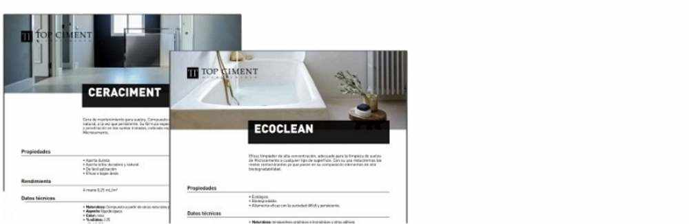

8 motivi per cui il microcemento è il futuro delle riforme 13/10/2020

Il microcemento è il rivestimento decorativo del presente, ma sopra
tutto il futuro, in quanto i suoi numerosi vantaggi rispetto ad altri materiali
lo rendono ideale per la creazione di tutti i tipi di spazi e
stili. Di seguito spieghiamo i principali vantaggi del microcemento che
di cui vi innamorerete e di cui realizzerete la
la casa dei tuoi sogni.
Microcement pools, the best possible option 2/10/2020

Avere la propria piscina è di solito una delle più
sogni ricorrenti. Chi non vorrebbe passare tutto il giorno in ammollo
il sole o sul prato della loro casa? E, se vogliamo il meglio,
una piscina di microcemento è l'opzione perfetta.
Nuovo sigillante antiscivolo! 30/03/2020

Topsealer WT Ansti Slip entra a far parte della famiglia delle vernici sigillanti per
offrono un prodotto chiave per le superfici in microcemento: l'antiscivolo
sigillatore.
Tl'ottica cambia il suo immagine! 13/01/2020

Da Topciment abbiamo deciso di fare un passo avanti quando viene a progettare e abbiamo aggiornato la nostra immagine e l'estetica dei nostri cubi.
Vi presentiamo il nostro gamma di prodotti Sttandard , stessa qualità e caratteristiche, ma con un immagine rinnovata molto più visuale e corrente, sempre senza perdere il essenza di Topciment .
Leggi di piùTopciment presenta Efectto! 13/01/2020

Topciment presenta Efectto , la nuova linea di continuo e rivestimenti decorativi pronti all'uso.
Efectto è una vasta gamma di prodotti con una grande varietà di finiture che saranno svelato nei prossimi mesi. Il primo di questi nuovi prodotti per vedere la luce è Efectto Quartz.
Leggi di piùCucina piani di lavoro con microcemento?13/01/2020

Ci sono molti tipi di materiali per i piani di lavoro della cucina, più economico e più costoso, ma il microcemento Topciment è un opzione diversa da tutte le soluzioni presenti sul mercato. Diciamo qui c'è tutto, in modo che possiate scegliere il perfetto piano di lavoro della cucina: resistente, igienico, facile da pulire e mantenere.
Leggi di piùDesign e comfort per gli spazi esterni.13/01/2020

Topciment presenta l'ultima soluzione per esterni, terrazze, balconi e patii, il microcemento esterno Microstone. È il prodotto più innovativo nei rivestimenti decorativi continui perché raggiunge un ambiente pulito, piacevole e all'avanguardia ambiente.
Leggi di piùRivestimenti murali con Topciment 13/01/2020

Il rivestimento delle pareti di alcune stanze, o di tutto il complesso casa, ci dà qualità e un risultato estetico e duraturo, soprattutto nei muri che richiedono un'igiene e una pulizia costanti, come quelli in cucina o in bagno.
Leggi di piùTopciment raccomanda Festool per un'applicazione perfetta. 13/01/2020

Una buona applicazione di microcemento è condizionata da diversi fattori, avendo prodotti di qualità, la tecnica di applicazione, ma utilizzando anche i migliori strumenti.
Leggi di più5 Tasti per ristrutturazione di successo del bagno 13/01/2020

Passiamo molto tempo in bagno e non sempre diamo ha pensato molto. Ecco quindi 5 consigli per rinnovare con successo il vostro bagno e dargli lo stile e l'arredamento che merita.
Leggi di piùErrori da evitare quando si combinano i colori 13/01/2020

In Topciment vi proponiamo alcuni trucchi per riuscire a ridefinire i diversi spazi della casa.
Leggi di piùMicrocemento nelle cucine13/01/2020

Il microcemento è un materiale neutro che si combina in qualsiasi tipo di cucina, dalle opzioni classiche a quelle contemporanee, tra cui industriale e nordico.
Leggi di piùMicrocemento senza problemi 13/01/2020

Come evitare problemi con il microcemento? Un'applicazione con I prodotti Topciment garantiscono la migliore qualità, applicatori certificati ed esperti in microcemento
Leggi di piùNuovi prodotti per la pulizia e la manutenzione del microcemento 13/01/2020

Topciment lancia sul mercato quattro nuovi prodotti in particolare formulato per la cura, la manutenzione e la pulizia di microcemento.
Leggi di piùTopciment si rinnova con CYPE per un altro anno13/01/2020
Topciment ha rinnovato per un altro anno con Cype e con questo accordo continuerà a fornire servizi ai professionisti dell'edilizia in termini di preparare i budget per i lavori con il microcemento.
Leggi di più